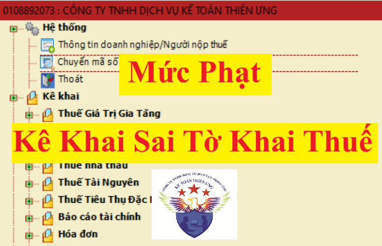

Tổng hợp các mức phạt kê khai sai tờ khai thuế GTGT, thuế thu nhập cá nhân, làm sai tờ khai quyết toán thuế TNDN, TNCN theo quy định mới nhất hiện nay tại Nghị định 125/2020/NĐ-CP quy định xử phạt vi phạm hành chính về thuế
Tùy vào việc kê khai sai có dẫn đến thiếu số tiền thuế phải nộp hay không mà áp dụng xử phạt vi phạm đối với hành vi làm sai tờ khai thuế
Cụ thể từng trường hợp như sau:
1. Đối với hành vi kê khai sai tờ khai thuế nhưng không dẫn đến thiếu số tiền thuế phải nộp:
Đối với trường hợp này thì thực hiện theo quy định tại Điều 12 của Nghị định 125/2020/NĐ-CP như sau:
| Hành Vi | Mức phạt |
|
1. Đối với hành vi khai sai, khai không đầy đủ các chỉ tiêu trong hồ sơ thuế nhưng không liên quan đến xác định nghĩa vụ thuế
(Trừ hành vi quy định tại mục 2 bên dưới đây)
|
Phạt tiền từ 500.000 đồng đến 1.500.000 đồng |
| 2. Đối với hành vi khai sai, khai không đầy đủ các chỉ tiêu trên tờ khai thuế, các phụ lục kèm theo tờ khai thuế nhưng không liên quan đến xác định nghĩa vụ thuế. | Phạt tiền từ 1.500.000 đồng đến 2.500.000 đồng |
|
3. Đối với một trong các hành vi sau đây:
a) Khai sai, khai không đầy đủ các chỉ tiêu liên quan đến xác định nghĩa vụ thuế trong hồ sơ thuế;
b) Hành vi quy định tại khoản 3 Điều 16; khoản 7 Điều 17 Nghị định này.
Trong đó: khoản 3 Điều 16; khoản 7 Điều 17 Nghị định 125/2020/NĐ-CP như sau:
Điều 16. Xử phạt hành vi khai sai dẫn đến thiếu số tiền thuế phải nộp hoặc tăng số tiền thuế được miễn, giảm, hoàn
3. Trường hợp người nộp thuế có hành vi khai sai theo quy định tại điểm a, b, d khoản 1 Điều này nhưng không dẫn đến thiếu số thuế phải nộp, tăng số thuế được miễn, giảm hoặc chưa được hoàn thuế thì không bị xử phạt theo quy định tại Điều này mà xử phạt theo quy định tại khoản 3 Điều 12 Nghị định này.
Điều 17. Xử phạt hành vi trốn thuế
7. Các hành vi vi phạm quy định tại điểm b, đ, e khoản 1 Điều này bị phát hiện sau thời hạn nộp hồ sơ khai thuế nhưng không làm giảm số tiền thuế phải nộp hoặc chưa được hoàn thuế, không làm tăng số tiền thuế được miễn, giảm thì bị xử phạt vi phạm hành chính theo quy định tại khoản 3 Điều 12 Nghị định này.
|
Phạt tiền từ 5.000.000 đồng đến 8.000.000 đồng |
| Công ty đào tạo Kế Toán Diệu Tâm mời các bạn tham khảo thêm bài viết: |
Biện pháp khắc phục hậu quả:

+ Buộc khai lại và nộp bổ sung các tài liệu trong hồ sơ thuế đối với hành vi quy định tại khoản 1, 2 và điểm a khoản 3 Điều này;
+ Buộc điều chỉnh lại số lỗ, số thuế giá trị gia tăng đầu vào được khấu trừ chuyển kỳ sau (nếu có) đối với hành vi quy định tại khoản 3 Điều này.
2. Đối với hành vi kê khai sai tờ khai thuế nhưng không dẫn đến thiếu số tiền thuế phải nộp hoặc tăng số tiền thuế được miễn, giảm, hoàn
Đối với trường hợp này thì thực hiện theo quy định tại Điều 16 của Nghị định 125/2020/NĐ-CP như sau:
1. Phạt 20% số tiền thuế khai thiếu hoặc số tiền thuế đã được miễn, giảm, hoàn cao hơn so với quy định đối với một trong các hành vi sau đây:
a) Khai sai căn cứ tính thuế hoặc số tiền thuế được khấu trừ hoặc xác định sai trường hợp được miễn, giảm, hoàn thuế dẫn đến thiếu số tiền thuế phải nộp hoặc tăng số tiền thuế được miễn, giảm, hoàn nhưng các nghiệp vụ kinh tế đã được phản ánh đầy đủ trên hệ thống sổ kế toán, hóa đơn, chứng từ hợp pháp;
b) Khai sai làm giảm số tiền thuế phải nộp hoặc tăng số tiền thuế được hoàn, số tiền thuế được miễn, giảm không thuộc trường hợp quy định tại điểm a khoản này nhưng người nộp thuế đã tự giác kê khai bổ sung và nộp đủ số tiền thuế thiếu vào ngân sách nhà nước trước thời điểm cơ quan thuế kết thúc thời hạn thanh tra, kiểm tra thuế tại trụ sở người nộp thuế;
c) Khai sai làm giảm số tiền thuế phải nộp hoặc tăng số tiền thuế được hoàn, số thuế được miễn, giảm đã bị cơ quan có thẩm quyền lập biên bản thanh tra, kiểm tra thuế, biên bản vi phạm hành chính xác định là hành vi trốn thuế nhưng người nộp thuế vi phạm hành chính lần đầu về hành vi trốn thuế, đã khai bổ sung và nộp đủ số tiền thuế vào ngân sách nhà nước trước thời điểm cơ quan có thẩm quyền ra quyết định xử phạt và cơ quan thuế đã lập biên bản ghi nhận để xác định là hành vi khai sai dẫn đến thiếu thuế;
d) Khai sai dẫn đến thiếu số tiền thuế phải nộp hoặc tăng số tiền thuế được miễn, giảm, hoàn đối với giao dịch liên kết nhưng người nộp thuế đã lập hồ sơ xác định giá thị trường hoặc đã lập và gửi cơ quan thuế các phụ lục theo quy định về quản lý thuế đối với doanh nghiệp có giao dịch liên kết;
đ) Sử dụng hóa đơn, chứng từ không hợp pháp để hạch toán giá trị hàng hóa, dịch vụ mua vào làm giảm số tiền thuế phải nộp hoặc làm tăng số tiền thuế được hoàn, số tiền thuế được miễn, giảm nhưng khi cơ quan thuế thanh tra, kiểm tra phát hiện, người mua chứng minh được lỗi vi phạm sử dụng hóa đơn, chứng từ không hợp pháp thuộc về bên bán hàng và người mua đã hạch toán kế toán đầy đủ theo quy định.
2. Biện pháp khắc phục hậu quả:
a) Buộc nộp đủ số tiền thuế thiếu, số tiền thuế được hoàn, miễn, giảm cao hơn quy định và tiền chậm nộp tiền thuế vào ngân sách nhà nước đối với hành vi quy định tại khoản 1 Điều này.
Trường hợp đã quá thời hiệu xử phạt thì người nộp thuế không bị xử phạt theo quy định tại khoản 1 Điều này nhưng người nộp thuế phải nộp đủ số tiền thuế thiếu, số tiền thuế được hoàn, miễn, giảm cao hơn quy định và tiền chậm nộp tiền thuế vào ngân sách nhà nước theo thời hạn quy định tại khoản 6 Điều 8 Nghị định này;
Trong đó:
Điều 8. Thời hiệu xử phạt vi phạm hành chính về thuế, hóa đơn; thời hạn được coi là chưa bị xử phạt; thời hạn truy thu thuế
Trong đó:
Điều 8. Thời hiệu xử phạt vi phạm hành chính về thuế, hóa đơn; thời hạn được coi là chưa bị xử phạt; thời hạn truy thu thuế
...
6. Thời hạn truy thu thuế
a) Quá thời hiệu xử phạt vi phạm hành chính về thuế thì người nộp thuế không bị xử phạt nhưng vẫn phải nộp đủ tiền thuế truy thu (số tiền thuế thiếu, số tiền thuế trốn, số tiền thuế được miễn, giảm, hoàn cao hơn quy định, tiền chậm nộp tiền thuế) vào ngân sách nhà nước trong thời hạn mười năm trở về trước, kể từ ngày phát hiện hành vi vi phạm. Trường hợp người nộp thuế không đăng ký thuế thì phải nộp đủ số tiền thuế thiếu, số tiền thuế trốn, tiền chậm nộp tiền thuế cho toàn bộ thời gian trở về trước, kể từ ngày phát hiện hành vi vi phạm.
b) Thời hạn truy thu thuế tại điểm a khoản này chỉ áp dụng đối với các khoản thuế theo pháp luật về thuế và khoản thu khác do tổ chức, cá nhân tự khai, tự nộp vào ngân sách nhà nước.
Đối với các khoản thu từ đất đai hoặc khoản thu khác do cơ quan có thẩm quyền xác định nghĩa vụ tài chính của tổ chức, cá nhân thì cơ quan có thẩm quyền xác định thời hạn truy thu theo quy định của pháp luật về đất đai và pháp luật có liên quan nhưng không ít hơn thời hạn truy thu theo quy định tại điểm a khoản này.
b) Buộc điều chỉnh lại số lỗ, số thuế giá trị gia tăng đầu vào được khấu trừ chuyển kỳ sau (nếu có) đối với hành vi quy định tại khoản 1 Điều này.
3. Trường hợp người nộp thuế có hành vi khai sai theo quy định tại điểm a, b, d khoản 1 Điều này nhưng không dẫn đến thiếu số thuế phải nộp, tăng số thuế được miễn, giảm hoặc chưa được hoàn thuế thì không bị xử phạt theo quy định tại Điều này mà xử phạt theo quy định tại khoản 3 Điều 12 Nghị định này.
Trong đó:
Điều 12. Xử phạt hành vi khai sai, khai không đầy đủ các nội dung trong hồ sơ thuế không dẫn đến thiếu số tiền thuế phải nộp hoặc không dẫn đến tăng số tiền thuế được miễn, giảm, hoàn
Điều 12. Xử phạt hành vi khai sai, khai không đầy đủ các nội dung trong hồ sơ thuế không dẫn đến thiếu số tiền thuế phải nộp hoặc không dẫn đến tăng số tiền thuế được miễn, giảm, hoàn
...
3. Phạt tiền từ 5.000.000 đồng đến 8.000.000 đồng đối với một trong các hành vi sau đây:
a) Khai sai, khai không đầy đủ các chỉ tiêu liên quan đến xác định nghĩa vụ thuế trong hồ sơ thuế;
b) Hành vi quy định tại khoản 3 Điều 16; khoản 7 Điều 17 Nghị định này.
Công ty đào tạo Kế Toán Diệu Tâm mời các bạn tham khảo thêm bài viết: